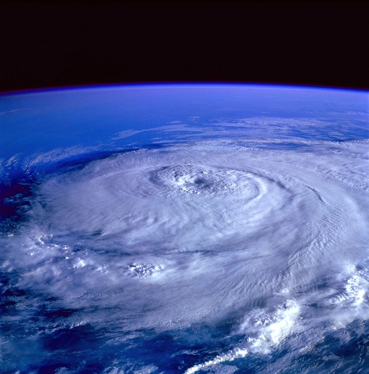

Hurricanes

What is hurricane?
A hurricane is a powerful storm that forms over warm ocean waters. It has strong winds that spin in a circle, with speeds of at least 74 mph. A weaker version of this storm, called a tropical storm, has winds between 39 and 73 mph. Both hurricanes and tropical storms usually bring heavy rain and thunderstorms.
Hurricanes are grouped into five categories based on how strong their winds are and how much damage they can cause:
Category One:Winds between 74-95 mph
- Winds can cause some damage
- Minor damage to home exteriors
- Tree branches may break, and smaller trees could be uprooted
- Power lines may be damaged, leading to power outages
Category Two: Winds between 96-110 mph
- Winds are very dangerous and can cause more serious damage
- Major damage to home exteriors
- Small trees may be uprooted, blocking many roads
- Power outages can last for several days to weeks
Category Three:Winds between 111-129 mph
- These winds cause severe damage
- Homes may suffer extensive exterior damage
- Many trees will be uprooted, and roads will be blocked
- Water and electricity may be hard to get
Category Four:Winds between 130-156 mph
- These winds cause catastrophic damage
- Power outages can last for weeks or even months
- Roofs and walls of homes may be torn off
- Most trees will be uprooted, and power lines will be down
- Roads may be blocked, isolating areas
Category Five:Winds over 157 mph
- These are the most destructive winds
- Many places might become uninhabitable
- A large number of homes may be destroyed
- Fallen trees and power lines can make areas hard to reach
- Power outages can last for weeks or months
Preparedness for Hurricanes
- Be informed by receiving alerts, warnings, and public safety information before, during, and after emergencies.
- If you live or work in a flood zone, hurricane evacuation zone, or an area that is prone to flooding, you should be prepared to evacuate.
- Ensure your smoke and carbon monoxide detectors are working and have fresh batteries.
- Consider purchasing a generator to provide power during an outage.
- Avoid driving or going outdoors during a storm. Flooding and damaging winds can make traveling dangerous.
- Continue to monitor media for emergency information.
- If told to shelter in place:
- Stay indoors and away from windows.
- Listen to local television or radio for updates.
- Conditions may change quickly; be prepared to evacuate to a shelter or neighbor’s home if necessary.